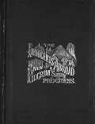

Virginia City, Nevada Territory
1862-1864
"Yours, dreamily, Mark Twain." Mark Twain, Virginia City Territorial Enterprise, February 3, 1863
Birthplace of Mark Twain

picture courtesy of Mark Twain's Western Years
"I am writing in my room, which is not quite as large or as nice as the one I had at home...How I hate
everything that looks, or tastes, or smells like California!--and how I hate everybody that loves the cursed
State! Californians hate Missourians,--consequently I take great pains to let them know that 'Mark Twain'
hails from there." letter to Jane Lampton Clemens and Pamela A. Moffett, 4.12.1863, Virginia City, Nevada
Territory, as quoted in Mark Twain's Letters, Vol. I


Back to Mississippi River | On to San Francisco